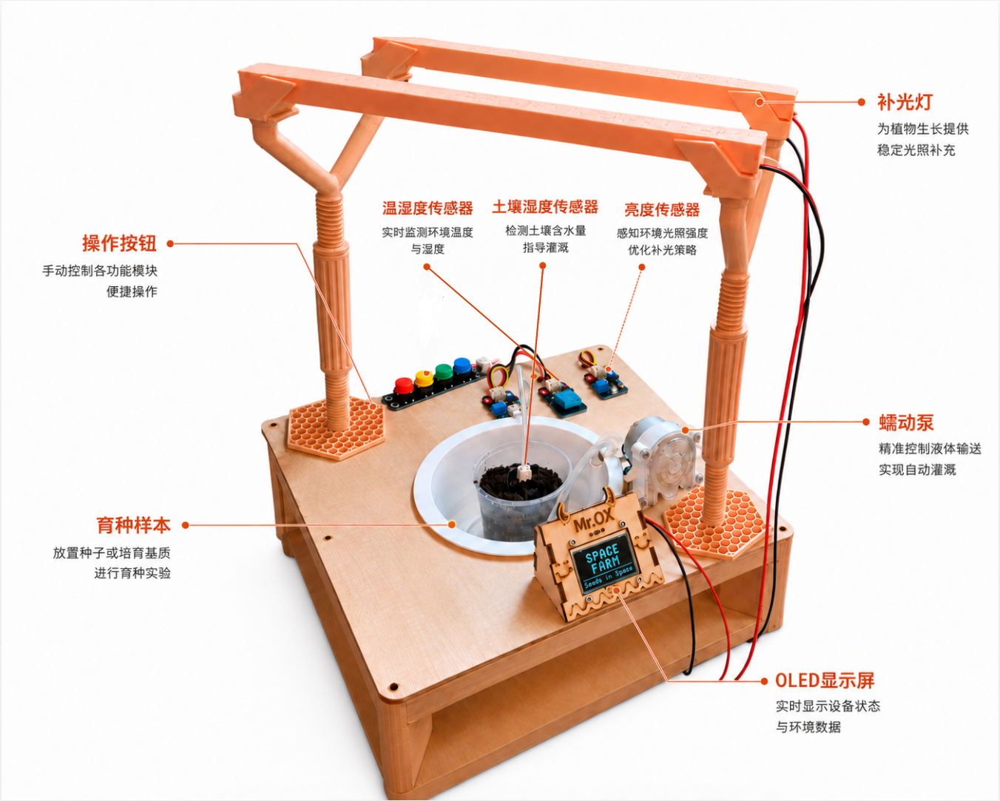
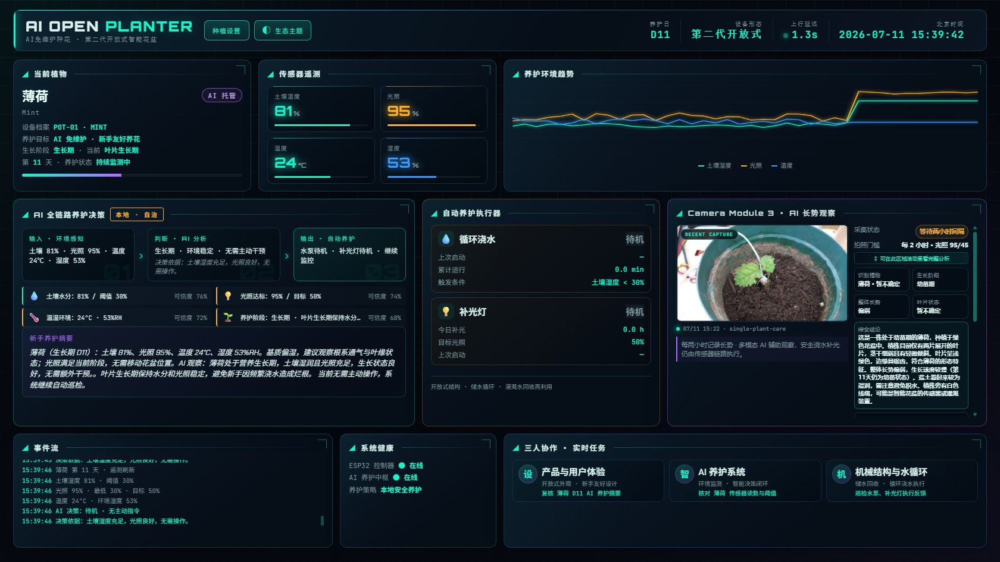

让育种与验证，第一次在同一个太空舱里闭环
在轨育种验证平台 · 地面原型
联网 · DeepSeek 育种顾问 · 遥控大屏
↕ WiFi
↓
ESP32 有电即独立运行；树莓派负责思考、联网与地面站大屏。
降级链在线 DeepSeek → 离线本地规则 → 安全护栏（限频·温度·掉线降级）
自治边界ESP32 断网/断上位机仍种活作物；树莓派·AI 挂了只是变笨、看不到
大屏只读地面站不向 ESP32 下发控制，杜绝误操作
UART 串口本地规则引擎plants.json · 8 作物参数199 用例护航

育种舱实物

遥控大屏 · 实时数据